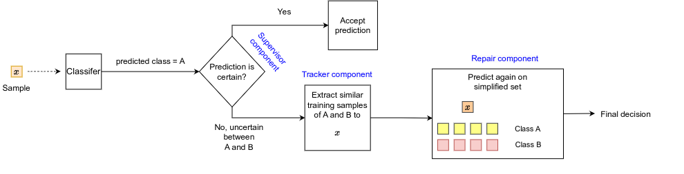

I'm second-year master student in computer science graduating from the University of Illinois Urbana-Champaign.


I possess a comprehensive skill set across the entire application development stack, seamlessly navigating tasks such as crafting business logic in the back-end, shaping intuitive user experiences on the front end, and designing client-side applications. In the realm of data engineering and analysis, I have successfully engineered large-scale databases and constructed robust ETL pipelines. My expertise extends to proficiently handling data cleaning, transforming datasets, and deriving valuable insights. With a strong foundation in both software engineering and data analysis, I bring a holistic approach to problem-solving and a passion for delivering impactful solutions.
This broad knowledge makes me a versatile team player. I'd characterize myself as a big team player as well as a team leader. I've had the chance to lead small teams, and I truly believe that "Teamwork makes the dream work". Teamwork should not be overlooked. Choosing the correct team management scheme can enormously save everyone's time and help the business grow more efficiently.
In my spare time, I usually do skating or hang out with my friends. I used to be an active Warzone player too!
I was very fortunate to be accepted into a two-year master's program at the University of Illinois at Urbana-Champaign as it is one of the top 5 universities for Computer Science in the whole world. My research and thesis is about community detection in large citation graphs, where I had to engineer features of graphs to obtain better clustering results.
I'm set to finish my grad studies by June 2024.
-
Social graph data engineering
Fall 2023 - CS597 Project
University of Illinois
Code
Given session information of Jazz music for a 40-year time interval indicating the artist names in each session, we were interested to monitor their collaboration in any time-frame of interest. The original data was in Postgres tables. I converted it to graph structure and imported it into Neo4j and encoded the features so that the query processing time for any time interval was less than 40 seconds, on a graph with 6m edges. The ultimate goal was to test certain set of social hypothesis about collaboration of musicians with eachother.

-
ETL pipeline for citation graph metadata
Fall 2023
University of Illinois
Code
As a part of my thesis research, I had to create a pipeline to periodically parse large amount of XML files holding information about PubMed papers, clean the data and extract features from these files such as year of publication, tilte and abstract. The curated data was stored in parquet files, which I later queried for my thesis project. The pipeline also generated a report about data quality, measured as presence or absence of each feature, across nearly 40 million records . I released this pipeline in illinois research analytics repo.
-
Investigating the trade-off between graph structure and community semantics in community detection methods
Fall 2023 - CS514 project
University of Illinois
Report and code
We evaluated multiple neural and traditional community detection approaches in a non-homophily synthetic graph as well as a real citation graph. The question we Investigated was how these methods deal with topological qualities of clusters versus the semantic qualities of clusters. And as a next step, we changed the objective function of a GNN approach to control this trade-off in terms of the clusters' quality.
-
Community detection in large citation graphs
Fall - Spring 2024 - Thesis
University of Illinois
Code
Working on a 8-million node and 50-million edge citation graph, my thesis involved engineering features of similarity between papers in PubMed. This features included year of publication, titles and abstracts, and the common neighbors of two papers. Once I obtained the features, I gave weights to them so to obtain score for citation edges, and clustered the resulting graph. The result showed my approach performs better than previous approaches that where blind to these features. I used Python, Spark and Postgres as the technical stack of my project.
-
Interpretable On-the-Fly Repair of Deep Neural Classifiers
Fall 2022
University of Illinois
Paper
working on neural classifiers on benchmark image classification datasets, my hypothesis was to monitor model's prediction uncertainty after deployment, and use that as a feature to predict if the model was to make a mistake. If it was likely that the model was about to make a mistake, a secondary mechanism kicked in where it obtained similar training samples to current test sample. These where the training samples that causesd uncertainty in the prediction. Finally, another simpler classifier (a similarity metric) re-classified the test sample within those similar training samples, reducing a multi-class classification problem to an easier binary classification problem within similar samples. My approach was able to reduce 10\% of misclassifications after the model was deployed.

Teaching Experience:
I love teaching!
Fortunately, I had the chance of TAing several courses both during my graduate and undergraduate studies. These are the courses I've TAed:
- TA - UIUC - CS105: Intro to computing non-tech
- TA - AUT - Computer architecture

Work Experience:
Software engineer intern @ AmericanAg
- Requirements elicitation and documentation
- Improved claims handling by implementing a new claims portal
- Led an intern team in an exploratry data analytics project on insurance claims